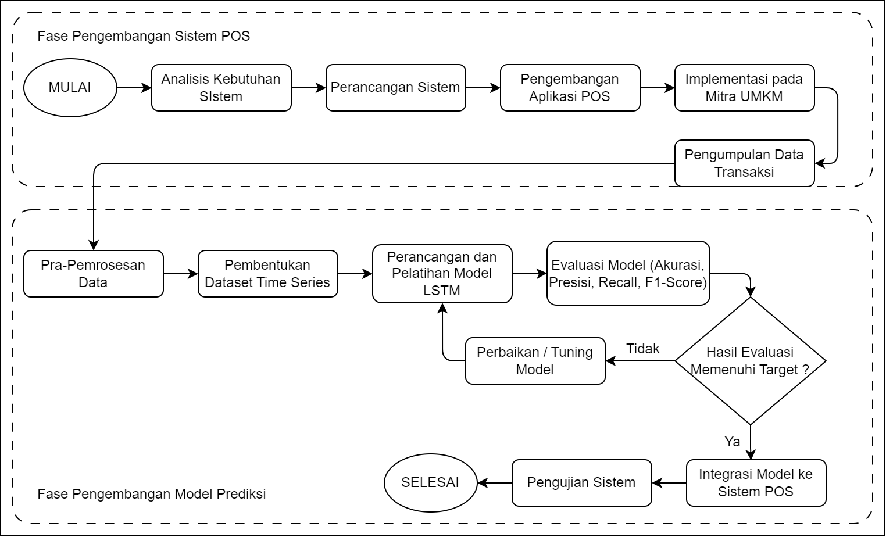
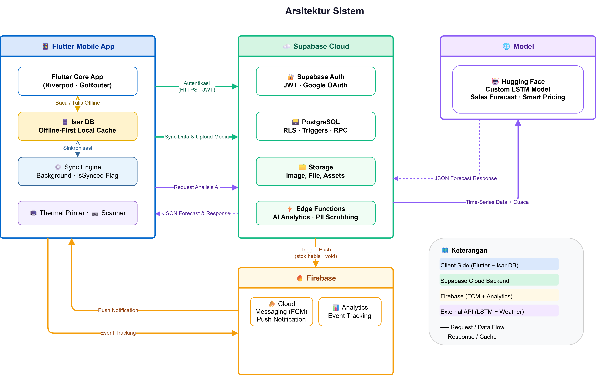
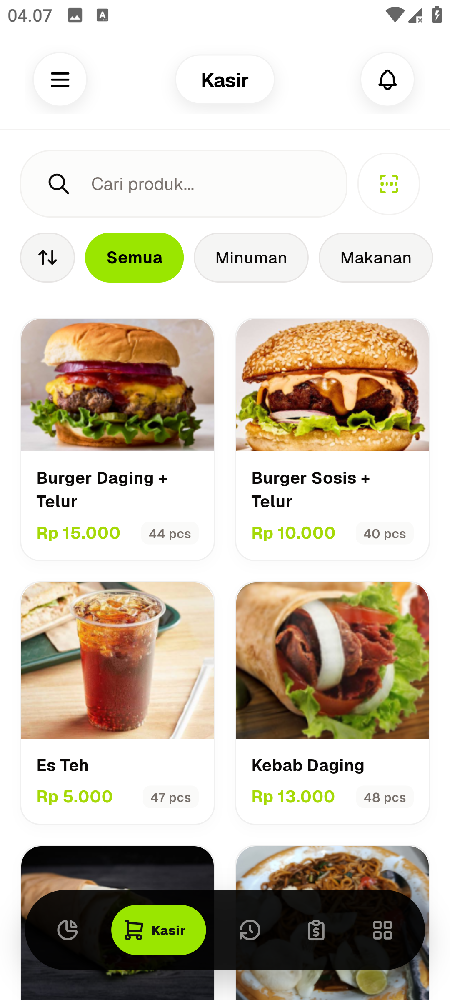
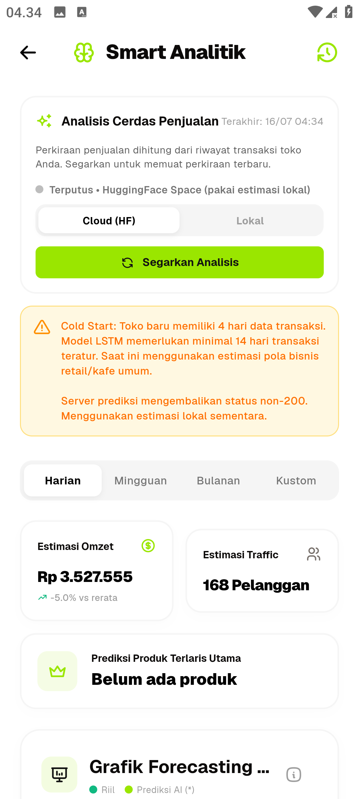
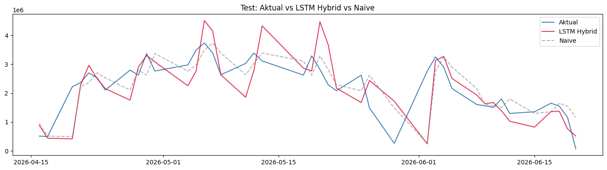
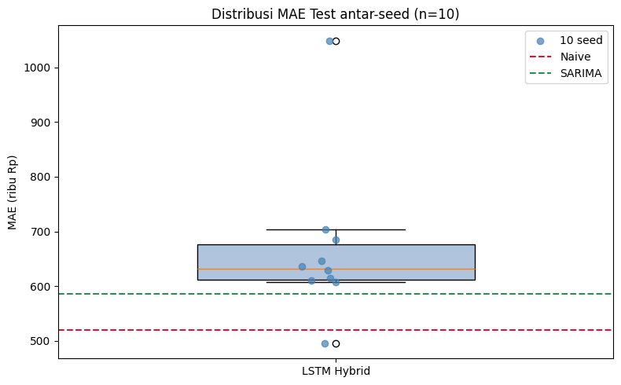

Rancang Bangun Aplikasi Point of Sale dengan Fitur Prediksi Penjualan Harian Menggunakan Metode Long Short-Term Memory (LSTM)
Muhammad Kholis
2022573010098 · Teknik Informatika · Politeknik Negeri Lhokseumawe
Pembimbing 1
Zulfan Khairil Simbolon, S.T., M.Eng.
Pembimbing 2
Azhar, S.T., M.T.
Penguji 1
Muhammad Arhami, S.Si., M.Kom.
Penguji 2
Mahdi, S.T., M.Cs.
Penguji 3
Hendrawaty, S.T., M.T.
02
Politeknik Negeri Lhokseumawe
Latar Belakang
Masalah Utama
Aplikasi POS pada usaha kecil seperti kantin institusi umumnya hanya mencatat transaksi; data harian yang terkumpul diposisikan sebatas arsip pelaporan, belum menjadi basis keputusan prediktif. Penentuan produksi, bahan baku, dan tenaga kerja masih bertumpu pada intuisi. Penelitian LSTM yang akurat pada literatur umumnya bertumpu pada data bertahun-tahun atau variabel eksogen yang tidak selalu tersedia, jarang diuji terhadap baseline sederhana, dan belum menyatu ke aplikasi POS yang benar-benar dipakai.
Dampak
Ketidakpastian estimasi penjualan memicu ketidakseimbangan stok dan permintaan: produksi terlalu sedikit menimbulkan stockout, terlalu banyak menimbulkan overstock dan kerugian bahan baku. Klaim keunggulan deep learning tanpa kontrol baseline berisiko menyesatkan, dan jarak antara riset akademik dengan penerapan praktis pada aplikasi POS nyata masih lebar.
Solusi
Merancang dan membangun aplikasi Point of Sale berbasis mobile yang mengintegrasikan fitur prediksi penjualan harian menggunakan LSTM ke dalam alur kerja transaksi.
Mengevaluasi secara empiris pengaruh augmentasi data sintetis TimeGAN terhadap performa LSTM pada dataset penjualan berskala kecil.
Membandingkan model terhadap baseline seasonal-naive pada beberapa horizon peramalan sebagai kontrol metodologis — studi kasus EatsTEDI, DTEDI, Universitas Gadjah Mada.
03
Politeknik Negeri Lhokseumawe
Rumusan Masalah
01.
Bagaimana merancang dan membangun aplikasi Point of Sale yang mengintegrasikan fitur prediksi penjualan harian ke dalam alur kerja transaksi, sehingga hasil peramalan dapat langsung dimanfaatkan oleh pengelola usaha?
02.
Bagaimana menerapkan model Long Short-Term Memory untuk memprediksi penjualan harian pada dataset EatsTEDI yang berjumlah 313 titik pengamatan, serta bagaimana pengaruh augmentasi data sintetis TimeGAN terhadap akurasi model tersebut?
03.
Bagaimana tingkat akurasi model Long Short-Term Memory dibandingkan terhadap baseline seasonal-naive pada beberapa horizon peramalan?
04
Politeknik Negeri Lhokseumawe
Tujuan Penelitian
01.
Membangun SistemMerancang dan membangun aplikasi Point of Sale berbasis mobile yang mengintegrasikan fitur prediksi penjualan harian ke dalam alur kerja transaksi, serta menguji fungsionalitasnya melalui pengujian sistem.
02.
Menerapkan ModelMenerapkan model Long Short-Term Memory untuk prediksi penjualan harian pada dataset EatsTEDI dan menganalisis pengaruh augmentasi data sintetis TimeGAN pada kondisi data pelatihan terbatas.
03.
Mengukur Secara JujurMengukur akurasi LSTM terhadap baseline seasonal-naive pada beberapa horizon peramalan, guna menghasilkan rekomendasi kelayakan penerapan deep learning pada usaha kuliner berskala kecil.
05
Politeknik Negeri Lhokseumawe
Batasan Masalah (1/2)
01.
Sumber dan cakupan dataData transaksi EatsTEDI, DTEDI UGM, rentang efektif 26 Agustus 2024–20 Juni 2026, 313 hari transaksi tercatat. Pemodelan univariat (total penjualan harian), tanpa variabel eksogen (cuaca, promosi, harga).
02.
Granularitas prediksiPrediksi pada tingkat agregat penjualan harian, bukan per item atau kategori produk.
03.
Cakupan metodeLSTM + augmentasi TimeGAN, dibandingkan terhadap Naive, Mean-7, Seasonal-Naive, dan SARIMA. Transformer, TFT, jittering, dan window warping di luar cakupan.
06
Politeknik Negeri Lhokseumawe
Batasan Masalah (2/2)
04.
Metrik evaluasiMAE, RMSE, sMAPE, dan MASE. MAPE konvensional tidak digunakan karena rentan menghasilkan galat persentase tidak representatif pada hari berpendapatan sangat rendah.
05.
Cakupan aplikasi dan pengujianAplikasi POS pada Android (Flutter), model dilatih luring dan diintegrasikan sebagai layanan prediksi. iOS dan online/incremental learning di luar cakupan. Pengujian dibatasi pada fungsional, struktural, dan akurasi model — tanpa pengukuran dampak ekonomi.
07
Politeknik Negeri Lhokseumawe
State of the Art
01.
Penelitian oleh S. Mansur dkk. (2025) “Sales Forecasting for Retail Stores Using Hybrid Neural Networks and Sales-Affecting Variables”.
Menggunakan hibrida CNN-LSTM dengan variabel eksogen (cuaca, hari libur, hari gajian, unjuk rasa) pada data penjualan harian 6 bulan satu gerai.
Hasil penelitian mencapai MAPE 4,16%, mengungguli ANN, CNN, dan LSTM tunggal.
Keberhasilan bertumpu pada tujuh variabel eksogen yang tidak tersedia pada dataset penelitian ini, dan penulis mencatat indikasi overfitting; tidak menguji baseline sederhana.
02.
Penelitian oleh P. Yadav & C. R. Barde (2025) “Retail Real-Time Sales Prediction System Using LSTM and XGBoost”.
Menggunakan LSTM untuk pemodelan deret waktu dikombinasikan dengan XGBoost, terintegrasi langsung dengan sistem Point of Sale berbasis web.
Hasil penelitian menunjukkan sistem prediksi penjualan waktu nyata yang terhubung dengan POS untuk penyerapan data dinamis.
Hanya berfokus pada pendekatan hibrida LSTM-XGBoost berbasis web; penelitian ini menggunakan LSTM murni pada aplikasi mobile dan menguji augmentasi TimeGAN.
Kebaruan penelitian ini: menerapkan LSTM pada dataset berskala kecil dengan deret tidak sinambung, menguji kontribusi augmentasi TimeGAN, sekaligus mengintegrasikan model ke aplikasi POS nyata dan mengevaluasinya terhadap baseline seasonal-naive — ketiganya belum pernah dilakukan bersamaan pada penelitian terdahulu.
08
Politeknik Negeri Lhokseumawe
Alur Penelitian

09
Politeknik Negeri Lhokseumawe
Arsitektur Sistem

Aplikasi POS (Flutter, Android) — arsitektur offline-first, kasir tetap dapat bertransaksi tanpa internet.
Isar DB — penyimpanan lokal selama offline.
Supabase PostgreSQL — basis data cloud, sinkronisasi otomatis saat koneksi aktif.
Layanan prediksi terpisah — Python (TensorFlow + Flask), model dilatih luring lalu di-deploy sebagai API di Hugging Face.
Halaman Smart Analytics — akses hasil prediksi langsung dari aplikasi.
Model-agnostic — penggantian metode prediksi tidak memerlukan perubahan aplikasi.
10
Politeknik Negeri Lhokseumawe
Data dan Pengumpulan Data
01.
Sumber DataDump SQL platform EatsTEDI, DTEDI UGM (eatstedi-20260621-010820.sql) — 32,15 MB, ±395.090 baris, rentang 24 Agustus 2024–20 Juni 2026 (666 hari kalender).
02.
Dataset FinalSetelah filter status lunas (is_paid = 1) & agregasi harian: rentang efektif 26 Agustus 2024–20 Juni 2026, 313 hari dengan transaksi tercatat dari 475 hari kerja kalender. Pemodelan univariat (revenue harian).
03.
Mengapa EatsTEDI?Mencakup empat semester berturut-turut (dua tahun akademik) — cukup kaya pola musiman (perkuliahan, UTS, UAS, libur antarsemester), namun cukup terbatas volumenya untuk menguji secara jujur nilai tambah LSTM & TimeGAN.
11
Politeknik Negeri Lhokseumawe
Teknik Pengumpulan Data
01.
Studi LiteraturMengkaji penelitian terdahulu tentang LSTM, augmentasi TimeGAN, dan baseline sebagai kontrol metodologis.
Akuisisi DataDump SQL berisi tabel invoices (utama) beserta product_sold, products, dan categories.
04.
Praproses DataPenyaringan status lunas, agregasi harian, normalisasi Min-Max Scaling, pembentukan sampel sliding window.
12
Politeknik Negeri Lhokseumawe
Aplikasi & Sample Data

Tampilan Kasir POS (Flutter) — sumber transaksi harian aplikasi

Halaman Smart Analytics — hasil prediksi penjualan harian
Data historis pelatihan model berasal dari dump SQL EatsTEDI (32,15 MB, ±395.090 baris, 24 Agustus 2024–20 Juni 2026), difilter status lunas dan diagregasi per tanggal menjadi 313 hari aktif sebagai dataset final.
13
Politeknik Negeri Lhokseumawe
Preview Sekilas Dataset
ModelLSTM/Data/Ekstrak/daily_sales.csv — hasil agregasi harian dari dump SQL EatsTEDI, dataset final untuk pelatihan model
date
revenue
transactions
qty_sold
day_of_week
is_weekend
is_holiday
is_ramadan
2024-08-26
1.701.500
113
585
0 (Sen)
0
0
0
2024-08-27
1.746.500
245
611
1 (Sel)
0
0
0
2024-08-28
1.650.500
179
570
2 (Rab)
0
0
0
2024-08-29
1.814.500
219
646
3 (Kam)
0
0
0
2024-08-30
1.233.500
167
453
4 (Jum)
0
0
0
…
…
…
…
…
…
…
…
2026-06-19
1.159.000
151
326
4 (Jum)
0
0
0
2026-06-20
68.500
1
24
5 (Sab)
1
0
0
313 baris hari aktif (revenue > 0) dipakai sebagai dataset final pemodelan, dari rentang 26 Agustus 2024 – 20 Juni 2026.
Hari tanpa transaksi (revenue = 0, mis. akhir pekan, libur akademik) disaring — bukan diisi nol, sesuai batasan pemodelan hari aktif.
Sumber mentah: eatstedi-20260621-010820.sql (32,15 MB, ±395.090 baris) → diparser & diagregasi menjadi berkas ini.
14
Politeknik Negeri Lhokseumawe
Hasil dan Pembahasan (1/2)
Skenario 1 — Perbandingan LSTM terhadap baseline statistik (one-step-ahead, rata-rata 10 seed)
Model
MAE (Rp)
RMSE (Rp)
sMAPE
MASE
Naive (kemarin)
519.841
697.253
30,77%
1,432
SARIMA
586.083
751.408
33,80%
1,615
Mean-7
647.263
791.746
36,25%
1,784
LSTM Hybrid (rata-rata)
667.718
897.563
38,06%
1,840
Seasonal-Naive (k=4)
775.451
975.701
44,97%
2,137

Pendapatan Aktual vs. Prediksi — LSTM Hybrid Residual

Skenario 2 — Sebaran MAE Multi-Seed (10x)
Naive mencatat galat terkecil — pendapatan kantin didominasi persistensi jangka pendek. Multi-seed: MAE Rp667.718 ± Rp145.024, MASE 1,840 ± 0,400; hanya 1 dari 10 percobaan (seed ke-7, MAE Rp495.527) mengungguli Naive & SARIMA — model belum stabil pada ukuran data ini.
15
Politeknik Negeri Lhokseumawe
Hasil (2/2), Kesimpulan & Rekomendasi
Skenario 3 (TimeGAN, multi-langkah): MAE turun 50,8% (Rp1.750.355 → Rp860.695). Skenario 4 (horizon h=1–7): MASE LSTM stabil 2,124–2,505, namun Seasonal-Naive tetap unggul (2,012–2,140). Pengujian sistem: 12/12 black box, 3/3 white box, 0 kehilangan/duplikasi data sinkronisasi.
Kesimpulan
Aplikasi POS mobile dengan fitur prediksi berhasil dibangun (Flutter, Isar DB, Supabase, Flask di Hugging Face), terintegrasi lewat Smart Analytics dengan arsitektur offline-first; seluruh pengujian berhasil.
LSTM hybrid residual diterapkan pada 313 hari aktif; augmentasi TimeGAN memperbaiki MAE multi-langkah 50,8% — keterbatasan performa bersumber dari kelangkaan data, bukan arsitektur.
LSTM belum mengungguli baseline (Naive & Seasonal-Naive) pada volume data ini; metode statistik sederhana lebih layak. LSTM relevan ditinjau ulang bila data mencakup 3–5 tahun operasional — tanpa mengubah aplikasi karena layanan bersifat model-agnostic.
Rekomendasi
Perpanjang data ke 3–5 tahun operasional.
Tambahkan fitur gap_days pada model.
Atasi cold start dengan transfer learning / model global.
Kembangkan model hybrid (ARIMA-LSTM / LSTM-GRU).
Aktifkan enkripsi basis data lokal Isar DB.
Integrasi QRIS dinamis & notifikasi WhatsApp API.
Politeknik Negeri Lhokseumawe
Terima Kasih
Muhammad Kholis · 2022573010098 · Teknik Informatika · Politeknik Negeri Lhokseumawe